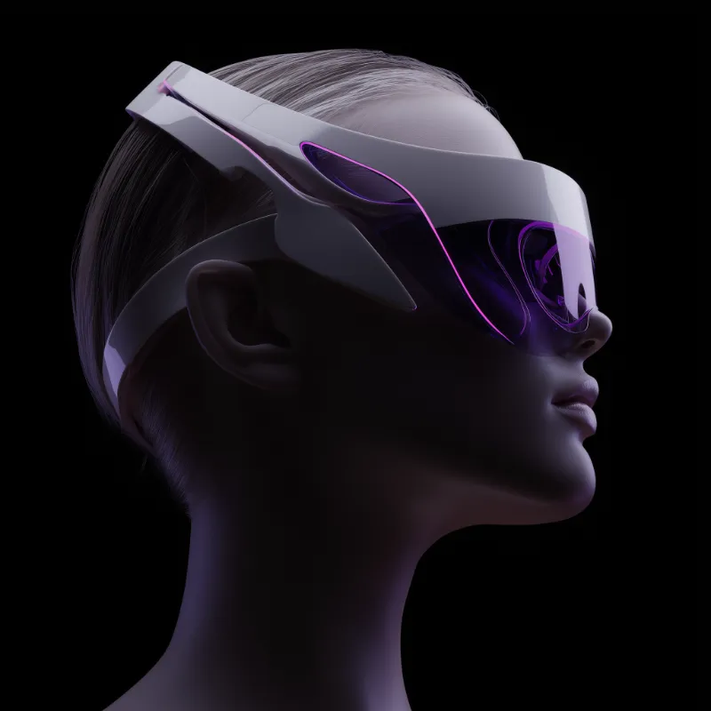
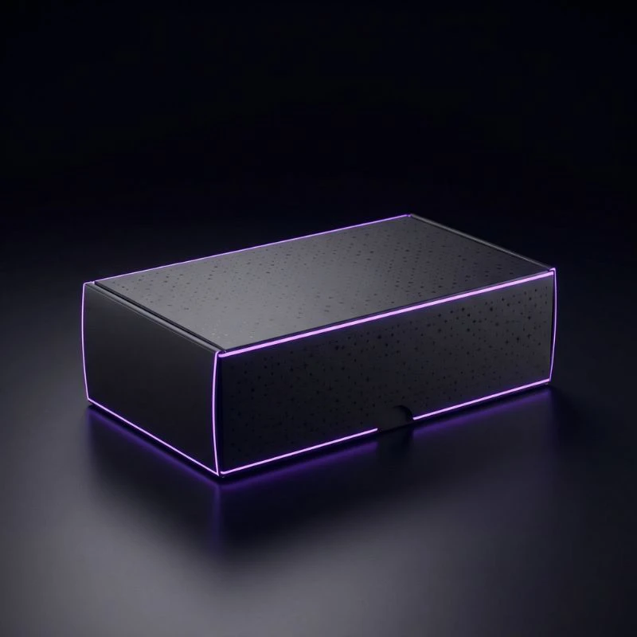
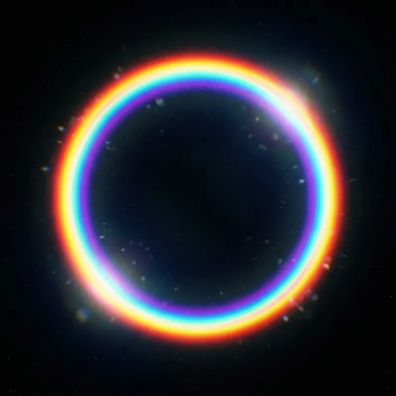
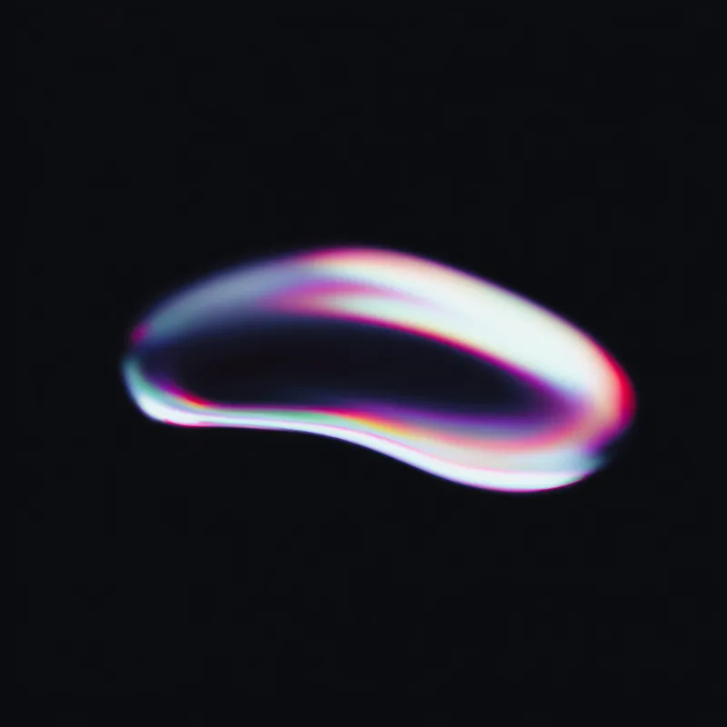

Alex Di Paolo
Software Developer
- IT System Designer








Intelligent system for ticket classification and prioritization for enterprise support.
Multi-level platform centralizing sales, management, and access control for museum services.
All-in-one cloud platform for business process digitization, with web and native mobile apps.
Software modules for digitizing operational logs and service requests in wastewater treatment.
End-to-end management system for the international trading of aeronautical spare parts.
Platform for collecting, assessing, and tracing ESG parameters with deterministic reproducibility.
Corporate WordPress website with single-page navigation and a fully custom contact form.
It increases your chances of selling your products and services. Here are the main advantages of going online.